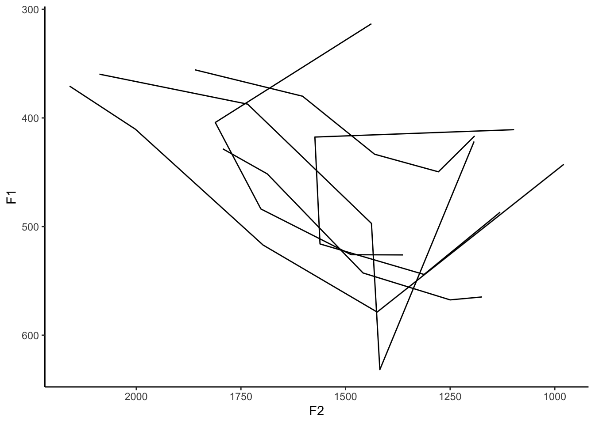

library(tidyverse)
Note
This post was written in 2018 and used code that was up-to-date at the time. In November 2023, I updated the code to reflect some changes in tidyverse.
This is Part 2 of a four-part series of blog posts on how to make vowel plots in R. In Part 1, we looked primarily at how to plot individual data points as a scatterplot. This time, I’ll focus entirely on trajectory data, that is, formant measurements per vowel at multiple points along its duration. Today, I’ll cover three things: how to prepare FAVE output for trajectory plots, plotting trajectories in the F1-F2 space, and in the time-Hz space (like what you see in Praat). For both kinds of plots, we’ll see how to show all tokens as well as averages per vowel.
As a sociolinguist working on English vowels, I work with FAVE data a lot and I know lots of other people do too. So for this tutorial to be applicable to as many other people as possible, I’ll work directly with FAVE output. This way, you can apply the code here to your own data and hopefully get the same results. If you use Praat to extract your own formant measurements, some of the data wrangling may not directly apply to you.
Finally, I should mention that in the first tutorial I downplayed the data processing because I didn’t need to do much. Today though, data processing is crucial for making these kinds of plots. I’ll try to explain what I’m doing along the way, but if you haven’t seen this kind of code before, it might be worth it to peruse R for Data Science, which is free online. In fact, even if you have seen this code before, I’d highly recommend reading the book. It’s a good one.
Data processing
So, to start, let’s load the packages required for this tutorial:
The tidyverse library is actually a whole suite of packages that work harmoniously together. It includes ones like ggplot2, dplyr, and tidyr, which you might have used before. Instead of loading each package individually like I did in the previous tutorial, I’ll load them together at once using library(tidyverse). The bonus is that it comes with a couple other packages that you might not be aware of, like stringr and readr.
Note though that tidyverse requires a relatively recent version of R. If you haven’t updated R since before about November 2017, you may have trouble installing and loading it. You can update R and it’ll work fine, or you might have better luck loading tidyr, dplyr, ggplot, and readr individually. This is a quick tutorial (not mine) on how to update R.
Read in the data
We’ll work with the same dataset that I used last time: a recording of me reading about 300 sentences while sitting at my kitchen table.
my_vowels_raw <- read_csv("http://joeystanley.com/data/joey.csv", show_col_types = FALSE) I’ve already removed most of the really bad outliers, but there are a few things I still need to do to get this data ready. First, I’ll keep just the vowels with primary stress and remove /ɹ/ with the filter function. Then, I’ll make all the words lowercase with mutate. I’ll also create a new column that just numbers the rows sequentially which will give each vowel it’s own unique identifier. For simplicity, I’m also going to remove some columns that we don’t need for today—or rather, keep just the columns I need—using select. All I want for now are the ID I just created, the vowel, the word, and all the F1@20%, F2@20%, F1@35%, etc. columns. This last group are formant measurements at 20%, 35%, 50%, 65%, and 80% into the vowels’ durations. Since R doesn’t like those non-alphanumeric characters in the column names though, you’ll have to use ticks (`: that thing that shares a key with the tilde on my keyboard) around it: select(vowel, word, t, F1@20%:F2@80%). These five points give us the trajectory data we need. (I’ll toss out the plain F1, F2, and F3 columns because the time that those measurements come from varies from vowel to vowel.)
If you read your data in using read.csv() instead of readr::read_csv(), it converts the original column names (
F1@20%, etc.) to something like F1.20., with periods instead of the non-alphanumeric characters..
Also, you can also use the time (the t column) as the unique id instead of creating new ones, but I like creating sequential numbers better.
my_vowels <- my_vowels_raw %>%
filter(stress == 1,
vowel != "ER") %>%
mutate(word = tolower(word)) %>%
rowid_to_column("id") %>%
select(id, vowel, word, `F1@20%`:`F2@80%`) %>%
print()# A tibble: 544 × 13
id vowel word `F1@20%` `F2@20%` `F1@35%` `F2@35%` `F1@50%` `F2@50%`
<int> <chr> <chr> <dbl> <dbl> <dbl> <dbl> <dbl> <dbl>
1 1 AW without 483 1518. 594. 1392. 605. 1210
2 2 AA todd 775. 1337. 740. 1162. 615. 1065.
3 3 AE last 638. 1513. 643. 1445 614. 1005.
4 4 EY places 391 1664. 391 1664. 363. 1810.
5 5 EH guest 468. 1719. 473. 1712. 533 1614.
6 6 IY sleeping 301. 1596. 262. 2216. 254. 2336.
7 7 EH collectors 512 1317 512 1317 530. 1378.
8 8 EY snakes 372. 1856. 469. 1829. 409. 1609.
9 9 IY feeds 1388. 2206. 257. 2035. 253. 1896.
10 10 IH trigger 347. 1602. 348. 1607. 353. 1690.
# ℹ 534 more rows
# ℹ 4 more variables: `F1@65%` <dbl>, `F2@65%` <dbl>, `F1@80%` <dbl>,
# `F2@80%` <dbl>As a review, here’s what this looks like with a scatterplot of the formants at the midpoints.
ggplot(my_vowels, aes(x = `F2@50%`, y = `F1@50%`, color = vowel)) +
geom_point() +
stat_ellipse(level = 0.67) +
scale_x_reverse() + scale_y_reverse() +
theme_classic() +
theme(legend.position = "none")
Okay, so we’ve got some data. Let’s figure out how we can plot these as trajectories.
F1-F2 Trajectory Plot
The first plot that I want to show how to do is similar to the ones we’ve done before in the F1-F2 vowel space. But the only difference is that instead of dots we draw lines showing the paths of each vowel. To do that, we need to wrangle with the data a little bit, and then learn how to draw lines using ggplot.
Data processing
For now, let’s just focus on one vowel, my /aɪ/ vowel, since there is some trajectory there.
ay <- my_vowels %>%
filter(vowel == "AY") %>%
print()# A tibble: 52 × 13
id vowel word `F1@20%` `F2@20%` `F1@35%` `F2@35%` `F1@50%` `F2@50%`
<int> <chr> <chr> <dbl> <dbl> <dbl> <dbl> <dbl> <dbl>
1 15 AY flight 524. 1109. 535. 1174 511. 1355.
2 29 AY insiders 894. 1662. 730. 1526. 514. 1389
3 31 AY sites 608. 1498. 442. 1366. 498. 1498.
4 36 AY likely 532. 1120. 576. 1260. 548. 1466.
5 40 AY like 443. 978. 579. 1424. 517 1697.
6 58 AY like 526. 1363. 526. 1487. 484. 1702.
7 67 AY hydrogen 693. 1538. 704. 1568. 492. 1776.
8 79 AY right 447. 1117. 538. 1253. 466. 1555.
9 82 AY michael 214. 1007. 378. 977. 682. 1224.
10 87 AY right 432. 970. 566. 1169. 653. 1439.
# ℹ 42 more rows
# ℹ 4 more variables: `F1@65%` <dbl>, `F2@65%` <dbl>, `F1@80%` <dbl>,
# `F2@80%` <dbl>And we’ll plot it for good measure.
ggplot(ay, aes(x = `F2@50%`, y = `F1@50%`)) +
geom_point() +
scale_x_reverse() + scale_y_reverse() +
theme_classic()But, midpoints for diphthongs don’t say as much as their entire trajectories do. We have the trajectory data, but it’s spread out across all those columns (F1@20%, etc.). The ggplot function can only plot two columns at a time (the x- and y-axes), but our trajectory data is spread out over ten columns. We need to somehow reshape our data so that all the F1 data is in one column and all the F2 data is in another column.
What we need to do is essentially squish our data to cram 10 columns’ worth of information into just two. Our data currently is in what’s called a “wide” format because we have lots of columns. What we need to do is convert into a “tall” format, which has fewer columns, but more rows. For example, here’s a simplified version of what our data looks like now:
## vowel F1%20% F1@80% F2@20% F2@80%
## <chr> <dbl> <dbl> <dbl> <dbl>
## 1 vowel1 500 550 1000 1150
## 2 vowel2 600 650 1500 1550
## 3 vowel3 700 750 2000 2050And this is what we want it to end up like:
## vowel percent F1 F2
## * <chr> <chr> <dbl> <dbl>
## 1 vowel1 20 500 1000
## 2 vowel1 80 550 1150
## 3 vowel2 20 600 1500
## 4 vowel2 80 650 1550
## 5 vowel3 20 700 2000
## 6 vowel3 80 750 2050So how do we do that? Unfortunately, because we have F1 and F2 measurements, it takes a bit more finagling than one simple function can provide, but I’ll walk you through it.
Note
Edit: tidyr has been updated since this tutorial was posted. For more elegant and powerful code that accomplishes the same thing that this section covers, but based on a newer version of tidyr, see this blog post.
They key to this is to use the pivot_longer function from the tidyr library. This function—it’s like black magic, I swear—takes multiple columns and condenses them down into just two. This function has two required arguments:
The first argument of
pivot_longeriscols, which is what columns you would like to condense down. By default, it does all of them, but we want to keep thevowel,word, andtcolumns. You could typeF1@20%,F2@20%,F1@35%, F2@35%, F1@50%,F2@50%,F1@65%,F2@65%,F1@80%,F2@80%, but that’s a lot. Instead, I’ll just use the shortcutstarts_withfromdplyr. Since all those columns start with"F", this works out well.The second argument of
gatherisnames_to, which is the arbitrary name of a new column that will contain the various column names you’ll be condensing down. Since the names of columns we want to gather areF1@50%,F2@50%, etc. I’ll call this new columnformant_percentsince it will have information about what formant at what percent into the vowel’s duration we’re on.The third argument is
values_to, which is the name of a new column that you want to create that will contain all the values in the columns you want to combine together. Since all the cells in theF1@50%,F2@50%, etc. columns currently have formant measurements in Hertz, I like to call this columnhz.
So the code ends up looking like this:
ay %>%
pivot_longer(cols = starts_with("F"), names_to = "formant_percent", values_to = "hz")# A tibble: 520 × 5
id vowel word formant_percent hz
<int> <chr> <chr> <chr> <dbl>
1 15 AY flight F1@20% 524.
2 15 AY flight F2@20% 1109.
3 15 AY flight F1@35% 535.
4 15 AY flight F2@35% 1174
5 15 AY flight F1@50% 511.
6 15 AY flight F2@50% 1355.
7 15 AY flight F1@65% 444.
8 15 AY flight F2@65% 1550.
9 15 AY flight F1@80% 386.
10 15 AY flight F2@80% 1655.
# ℹ 510 more rowsOkay, so even though there are just 52 tokens of /aɪ/, now we have 520 rows in our dataframe. That’s because each vowel is now spread across ten rows, one for each of the ten formant measurements. It might not be clear right now that that’s what it did, but we can sort the data by ID and you can get a better picture:
ay %>%
pivot_longer(cols = starts_with("F"), names_to = "formant_percent", values_to = "hz") %>%
arrange(id)# A tibble: 520 × 5
id vowel word formant_percent hz
<int> <chr> <chr> <chr> <dbl>
1 15 AY flight F1@20% 524.
2 15 AY flight F2@20% 1109.
3 15 AY flight F1@35% 535.
4 15 AY flight F2@35% 1174
5 15 AY flight F1@50% 511.
6 15 AY flight F2@50% 1355.
7 15 AY flight F1@65% 444.
8 15 AY flight F2@65% 1550.
9 15 AY flight F1@80% 386.
10 15 AY flight F2@80% 1655.
# ℹ 510 more rowsThere we go. Now it’s clearer that the ten formant measurements from this one word are now spread out in ten rows instead of the original ten columns.
So, this is closer to what we wanted, but we actually squished it a little too much! We actually want F1 and F2 to be in separate columns, and right now they’re all in one.
This is a more transparent, but more cumbersome method. Again, see this blog post for instructions on how to reduce these three lines into one.
So one way to do this is to split up the formant_percent column into two: formant and percent. It’s strange to have two pieces of information (what formant and the timepoint) in one column. We can use the separate_wider_delim function for this. As its first argument, we’ll tell it what column we want to separate (here, it’s formant_percent). Then, we’ll tell is where to split it, which is at the “@” symbol. Then, we’ll add the names argument, which is just a list of new, arbitrary column names that the split data will now be in, which for us is "formant" and “percent".
ay %>%
pivot_longer(cols = starts_with("F"), names_to = "formant_percent", values_to = "hz") %>%
separate_wider_delim(formant_percent, delim = "@", names = c("formant", "percent"))# A tibble: 520 × 6
id vowel word formant percent hz
<int> <chr> <chr> <chr> <chr> <dbl>
1 15 AY flight F1 20% 524.
2 15 AY flight F2 20% 1109.
3 15 AY flight F1 35% 535.
4 15 AY flight F2 35% 1174
5 15 AY flight F1 50% 511.
6 15 AY flight F2 50% 1355.
7 15 AY flight F1 65% 444.
8 15 AY flight F2 65% 1550.
9 15 AY flight F1 80% 386.
10 15 AY flight F2 80% 1655.
# ℹ 510 more rowsThat worked pretty well! However, we’ll need to trim off the extra “%” symbol at the end of the new percent column, which we can do using str_remove.
ay %>%
pivot_longer(cols = starts_with("F"), names_to = "formant_percent", values_to = "hz") %>%
separate_wider_delim(formant_percent, delim = "@", names = c("formant", "percent")) %>%
mutate(percent = str_remove(percent, "%"))# A tibble: 520 × 6
id vowel word formant percent hz
<int> <chr> <chr> <chr> <chr> <dbl>
1 15 AY flight F1 20 524.
2 15 AY flight F2 20 1109.
3 15 AY flight F1 35 535.
4 15 AY flight F2 35 1174
5 15 AY flight F1 50 511.
6 15 AY flight F2 50 1355.
7 15 AY flight F1 65 444.
8 15 AY flight F2 65 1550.
9 15 AY flight F1 80 386.
10 15 AY flight F2 80 1655.
# ℹ 510 more rowsOkay, so now we have one column saying what formant the measurement is for, and another column saying the timepoint. We need to reverse the squish a little bit, and put the formants into two columns. So the opposite of pivot_longer is pivot_wider, and as arguments, you first tell it what column contains the text that will serve as the column names, and then what column contains the numbers you want to be in the cells of those new columns.
ay %>%
pivot_longer(cols = starts_with("F"), names_to = "formant_percent", values_to = "hz") %>%
separate_wider_delim(formant_percent, delim = "@", names = c("formant", "percent")) %>%
mutate(percent = str_remove(percent, "%")) %>%
pivot_wider(names_from = formant, values_from = hz)# A tibble: 260 × 6
id vowel word percent F1 F2
<int> <chr> <chr> <chr> <dbl> <dbl>
1 15 AY flight 20 524. 1109.
2 15 AY flight 35 535. 1174
3 15 AY flight 50 511. 1355.
4 15 AY flight 65 444. 1550.
5 15 AY flight 80 386. 1655.
6 29 AY insiders 20 894. 1662.
7 29 AY insiders 35 730. 1526.
8 29 AY insiders 50 514. 1389
9 29 AY insiders 65 553. 1538
10 29 AY insiders 80 514. 1484.
# ℹ 250 more rowsViolà! Our data is ready. Now each row represents a single time point, and there is one column for F1 and one column for F2.
Do you remember why we bothered to do all that in the first place? Well, because ggplot needs two columns (F1 and F2) for the x- and y-axes. But our measurements were spread out over 10 columns. So we collapsed them down to two. This is the dataset we want to stick with, so we’ll save it into a new dataframe called ay_tall.
ay_tall <- ay %>%
pivot_longer(cols = starts_with("F"), names_to = "formant_percent", values_to = "hz") %>%
separate_wider_delim(formant_percent, delim = "@", names = c("formant", "percent")) %>%
mutate(percent = str_remove(percent, "%")) %>%
pivot_wider(names_from = formant, values_from = hz)So now comes the fun part. Our data is set, now we just need to work in ggplot2.
Drawing lines in the F1-F2 space
The function that we need is geom_path. We’ll use this instead of geom_point, which is what we used for scatterplots. To save you from scrolling, here’s the code for the scatterplot:
ggplot(ay, aes(x = `F2@50%`, y = `F1@50%`)) +
geom_point() +
scale_x_reverse() + scale_y_reverse() +
theme_classic()
The last two lines transfer over just fine, so we can leave them. But we need to make a few changes to the beginning portion. First, we change the dataset from ay to ay_tall. We’ll then have to change F2@50% and F1@50%—since we no longer have those columns—into just F2 and F1 which are the corresponding columns in ay_tall. We can change geom_point to geom_path and bada-boom!
ggplot(ay_tall, aes(x = F2, y = F1)) +
geom_path() +
scale_x_reverse() + scale_y_reverse() +
theme_classic()Oops. That looks awful. So what happened? As it turns out, geom_path literally just connected the dots in the order that they appear in the dataset. It drew one continuous line because we didn’t tell it to do otherwise. What we need is an additional argument, the group argument, that says to draw one line for every group. So what should the groups be? Well, we want one line per token, so we want a column that has a unique vowel per token. Aha! This is why we created that id column at the beginning! So in the aes function, add group = id and then let’er rip.
ggplot(ay_tall, aes(x = F2, y = F1, group = id)) +
geom_path() +
scale_x_reverse() + scale_y_reverse() +
theme_classic()Okay, so still not great. It’s just because we have a lot of data. I’ll filter the data down to just the tokens of me saying the word “time”:
like_tokens <- ay_tall %>%
filter(word == "like")
ggplot(like_tokens, aes(x = F2, y = F1, group = id)) +
geom_path() +
scale_x_reverse() + scale_y_reverse() +
theme_classic()
Okay, so less messy. But still not great. For one, we can’t even tell which direction the lines are going. We can add some arrows with the arrow argument in geom_path. I’ll let you look up the help for arrows (hint: ?grid::arrow), but here is some code that has worked for me. It says to put an arrow at the end of the line (as opposed to the beginning), make it a filled triangle, and make it a tenth of an inch in size.
ggplot(like_tokens, aes(x = F2, y = F1, group = id)) +
geom_path(arrow = arrow(ends = "last",
type = "closed",
length = unit(0.1, "inches"))) +
scale_x_reverse() + scale_y_reverse() +
theme_classic()So we’re getting there. Let’s see if we can add some color. Maybe I can make the arrows go from one color to another as they progress along the vowel’s trajectory. We can add another aesthetic, color, which will vary with the values in the percent column.
ggplot(like_tokens, aes(x = F2, y = F1, group = id, color = percent)) +
geom_path(arrow = arrow(ends = "last", type = "closed", length = unit(0.1, "inches"))) +
scale_x_reverse() + scale_y_reverse() +
theme_classic()Since we created that percent column using pivot_longer and separate_wider_delim and stuff, even though they’re numbers it’ll treat them as factors in a categorical variable. You can easily convert it into numeric using as.numeric in mutate. I’ll also change the colors to make it more striking using scale_color_distiller (see more info on this at colorbrewer2.org):
The problem now is that you’ve got arrowheads at the end of each segment. Four lines per vowel means four arrowheads. I haven’t quite figured out how to get just one arrowhead when you use color like this.
like_tokens <- like_tokens %>%
mutate(percent = as.numeric(percent))
ggplot(like_tokens, aes(x = F2, y = F1, group = id, color = percent)) +
geom_path(arrow = arrow(ends = "last", type = "closed", length = unit(0.1, "inches"))) +
scale_x_reverse() + scale_y_reverse() +
scale_color_distiller(palette = "YlOrBr") +
theme_classic()So, we’ve seen how to make trajectory plots with one line per token. As you can in in my data, there’s a bit of noise. This is something I’ve noticed for a lot of the trajectory data I gather. So in the next section, we’ll see how to do essentially the same thing, except we’ll look at averages so we get one line per vowel.
Trajectories for all vowels
So maybe you’re not interested in individual tokens because your plots look like spaghetti, and would rather look at all the tokens for that vowel averaged together. No problem. We’ll create a new dataset that will just contain the averages for each vowel at each time point. This will involve a bit more wrangling, but the payoff is worth it.
Data wrangling
So let’s think about what kind of dataset we want. Starting with my_vowel, which is essentially the raw FAVE output, we have ten columns for each vowel. We want to reduce this down to just 14 rows (one for each vowel), with the average formants at each time point. To accomplish this, we can use summarize. This is a handy function that will help you, well, summarize your data. For example, let’s say we want to get the average F1 at the 20% point for the entire dataset. We can create a new column called mean_F1@20% and set it equal to the mean of the values in the F1.20. column:
my_vowels %>%
summarize(`mean_F1@20%` = mean(`F1@20%`))# A tibble: 1 × 1
`mean_F1@20%`
<dbl>
1 470.Similarly, we can do this for all the columns:
my_vowels %>%
summarize(`mean_F1@20%` = mean(`F1@20%`),
`mean_F2@20%` = mean(`F2@20%`),
`mean_F1@35%` = mean(`F1@35%`),
`mean_F2@35%` = mean(`F2@35%`),
`mean_F1@50%` = mean(`F1@50%`),
`mean_F2@50%` = mean(`F2@50%`),
`mean_F1@65%` = mean(`F1@65%`),
`mean_F2@65%` = mean(`F2@65%`),
`mean_F1@80%` = mean(`F1@80%`),
`mean_F2@80%` = mean(`F2@80%`))# A tibble: 1 × 10
`mean_F1@20%` `mean_F2@20%` `mean_F1@35%` `mean_F2@35%` `mean_F1@50%`
<dbl> <dbl> <dbl> <dbl> <dbl>
1 470. 1505. 468. 1492. 469.
# ℹ 5 more variables: `mean_F2@50%` <dbl>, `mean_F1@65%` <dbl>,
# `mean_F2@65%` <dbl>, `mean_F1@80%` <dbl>, `mean_F2@80%` <dbl>Ugh, that’s a lot of typing though, and it’s so repetitive. Isn’t there a shortcut? Yes! There’s a function called across, which will perform a function on all the columns you specify. First, you select the columns you want to summarize, which I’ll do with the shortcut starts_with("F"). The next argument in across is the name of the function you want to perform on all of these. We want the average, so we’ll just type mean. You can add additional arguments to across, which get passed to the function we’re calling (mean), so for good measure I like to add na.rm = TRUE just to make the code a little more robust at handling NAs in our data.
my_vowels %>%
summarize(across(starts_with("F"), mean, na.rm = TRUE))Warning: There was 1 warning in `summarize()`.
ℹ In argument: `across(starts_with("F"), mean, na.rm = TRUE)`.
Caused by warning:
! The `...` argument of `across()` is deprecated as of dplyr 1.1.0.
Supply arguments directly to `.fns` through an anonymous function instead.
# Previously
across(a:b, mean, na.rm = TRUE)
# Now
across(a:b, \(x) mean(x, na.rm = TRUE))# A tibble: 1 × 10
`F1@20%` `F2@20%` `F1@35%` `F2@35%` `F1@50%` `F2@50%` `F1@65%` `F2@65%`
<dbl> <dbl> <dbl> <dbl> <dbl> <dbl> <dbl> <dbl>
1 470. 1505. 468. 1492. 469. 1510. 453. 1547.
# ℹ 2 more variables: `F1@80%` <dbl>, `F2@80%` <dbl>So in just one line of code we can do what took us ten before. Thanks, across!
But wait. We don’t really want to know the average formant values for the entire dataset. What we really want is the average per vowel. How can we do the same thing per vowel? Well, luckily we can just add the .by argument (yes, with the dot at the beginning) to specify a column and it’ll essentially divide the dataset into chunks and the summarize function will apply to each chunk.
my_vowels %>%
summarize(across(starts_with("F"), mean, na.rm = TRUE), .by = vowel)# A tibble: 14 × 11
vowel `F1@20%` `F2@20%` `F1@35%` `F2@35%` `F1@50%` `F2@50%` `F1@65%` `F2@65%`
<chr> <dbl> <dbl> <dbl> <dbl> <dbl> <dbl> <dbl> <dbl>
1 AW 532. 1340. 598. 1249. 602. 1171. 534. 1144.
2 AA 568. 1235. 610. 1142. 640. 1143. 657. 1168.
3 AE 557. 1575. 609. 1576. 644. 1506. 644. 1488.
4 EY 391. 1782. 391. 1841. 373. 1911. 345. 1973.
5 EH 483. 1605. 483. 1600. 511. 1583. 514. 1577.
6 IY 440. 1918. 325. 1982. 291. 2062. 290. 2086.
7 IH 392. 1658. 382. 1662. 400. 1713. 389. 1708.
8 AY 528. 1224. 579. 1255. 570. 1431. 495. 1624.
9 UH 456. 1316. 411. 1254. 397. 1256. 364. 1307.
10 AO 589. 1136. 618. 1070. 605. 1052. 622. 1126.
11 UW 368. 1595. 337. 1557. 324. 1481. 314. 1423.
12 AH 491. 1291. 497. 1281. 526. 1268. 511. 1288.
13 OW 439. 1207. 431. 1067. 418. 999. 401. 1035.
14 OY 416. 996. 446. 900. 444. 1019. 425. 1298.
# ℹ 2 more variables: `F1@80%` <dbl>, `F2@80%` <dbl>You can actually add as many columns as you want to
.by. This is good for getting averages per vowel split up by following segment, for example. For example, try doing by = c(vowel, fol_seg).Note that now we have a column we didn’t have before, vowel, which shows the group variable. Now we have the dataset we want: the average formant measurements at each time point for all 14 vowels. Let’s save this as a new dataframe.
my_vowel_means <- my_vowels %>%
summarize(across(starts_with("F"), mean, na.rm = TRUE), .by = vowel)Okay, so we have this dataset. It’s essentially the parallel to my_vowels, only instead of individual tokens it has the averages. But, remember that we need to turn the data into a tall format for it to plot the way we want? So, we have to take this my_vowel_means data and turn it tall. Fortunately, you can copy and paste the code we used before:
my_vowel_means_tall <- my_vowel_means %>%
pivot_longer(cols = starts_with("F"), names_to = "formant_percent", values_to = "hz") %>%
separate_wider_delim(formant_percent, delim = "@", names = c("formant", "percent")) %>%
mutate(percent = str_remove(percent, "%")) %>%
pivot_wider(names_from = formant, values_from = hz) %>%
print()# A tibble: 70 × 4
vowel percent F1 F2
<chr> <chr> <dbl> <dbl>
1 AW 20 532. 1340.
2 AW 35 598. 1249.
3 AW 50 602. 1171.
4 AW 65 534. 1144.
5 AW 80 444. 1183.
6 AA 20 568. 1235.
7 AA 35 610. 1142.
8 AA 50 640. 1143.
9 AA 65 657. 1168.
10 AA 80 636. 1228.
# ℹ 60 more rowsOkay cool. We’re now ready to plot.
Plotting
Because we’ve been consistent with our code and variable names and stuff, the plotting code is also going to be very similar to what we saw before. All we need to do is change two things. First, we’ll change the data from like_tokens that we had earlier to to our new my_vowel_means_tall. Then, our group variable is now vowel instead of id because we want it to draw a separate line for each vowel.
ggplot(my_vowel_means_tall, aes(x = F2, y = F1, group = vowel)) +
geom_path(arrow = arrow(ends = "last", type = "closed", length = unit(0.1, "inches"))) +
scale_x_reverse() +
scale_y_reverse() +
theme_classic()
Because we have so many vowels, maybe we can add a little bit of color. Let’s have the color of the lines vary by the vowel as well:
ggplot(my_vowel_means_tall, aes(x = F2, y = F1, group = vowel, color = vowel)) +
geom_path(arrow = arrow(ends = "last", type = "closed", length = unit(0.1, "inches"))) +
scale_x_reverse() + scale_y_reverse() +
theme_classic()Okay, so now we have a trajectory plot. Now, if you look closely, some of this data might not be so good. For example, look at /i/, the blue line to the far left. It’s quite unlikely that my vowel actually starts that low. Perhaps there’s some bad data.
As it turns out, the problem was when we took the average. Because there are a few outliers in this data still, and because vowel formant outliers tend to be towards the low front portion of the vowel space, it’s pulling a lot of the measurements in that direction. The mean is quite sensitive to outliers. What we can try instead is to take the median, which is less sensitive.
So, the only change that we need to do is in across where we change the mean to median. In fact, we don’t even need to create a new object if you don’t want: we can pipe everything all at once, straight into ggplot! So in this code, I take the beginning dataset, create a summary of it, and then pipe it into ggplot. Note that when we pipe something into ggplot, you don’t need to specify the data anymore (the first argument), so I leave that blank.
my_vowels %>%
# Summarize by vowel
summarize(across(starts_with("F"), median, na.rm = TRUE), .by = vowel) %>%
# Turn it into tall data
pivot_longer(cols = starts_with("F"), names_to = "formant_percent", values_to = "hz") %>%
separate_wider_delim(formant_percent, delim = "@", names = c("formant", "percent")) %>%
mutate(percent = str_remove(percent, "%")) %>%
pivot_wider(names_from = formant, values_from = hz) %>%
# Plot it!
ggplot(aes(F2, F1, color = vowel, group = vowel)) +
geom_path(arrow = arrow(ends = "last", type = "closed", length = unit(0.1, "inches"))) +
scale_x_reverse() + scale_y_reverse() +
theme_classic()The result is a much cleaner picture: /i/ and /e/ sort of hook to the left while /u/ and /o/ start centralized and move to the back. My diphthongs follow their expected trajectories by starting centralized and sort of scooping down and up again. While cot and caught are somewhat close at their onsets, they have very different trajectories, clearly differentiating the phonemes. Finally, /ɪ/ is quite monophthongal, showing very little change in trajectory at all.
Right now, things are a little hard to read because there are 14 colors and a lot of them are very similar to one another. Also, the legend has the vowels in alphabetical order, which isn’t too helpful. In the previous tutorial, we went over how to change that, so I won’t comment on it much here. The only difference is I’ll set the factor levels using mutate in the dplyr package rather than using base R:
my_vowels %>%
# Relevel the vowels (random order to spread out similar colors)
mutate(vowel = factor(vowel, levels = c("IY", "EH", "AO", "UW",
"AW", "IH", "AE", "OW",
"AH", "OY", "EY", "AA", "UH", "AY"))) %>%
# Summarize by vowel
summarize(across(starts_with("F"), median, na.rm = TRUE), .by = vowel) %>%
# Turn it into tall data
pivot_longer(cols = starts_with("F"), names_to = "formant_percent", values_to = "hz") %>%
separate_wider_delim(formant_percent, delim = "@", names = c("formant", "percent")) %>%
mutate(percent = str_remove(percent, "%")) %>%
pivot_wider(names_from = formant, values_from = hz) %>%
# Plot it!
ggplot(aes(F2, F1, color = vowel, group = vowel)) +
geom_path(arrow = arrow(ends = "last", type = "closed", length = unit(0.1, "inches"))) +
scale_x_reverse() + scale_y_reverse() +
# Put the vowels in a meaningful order in the legend
scale_color_discrete(breaks = c("IY", "IH", "EY", "EH", "AE", "AA",
"AO", "OW", "UH", "UW",
"AH", "AY", "AW", "OY")) +
theme_classic()This is still suboptimal. It would be best to just have the name of the vowel on the plot itself. Fortunately, we saw how to do that in the previous tutorial. We’ll have to create a different dataset and use it in geom_label. Instead of one mega string of piped functions, I’ll save the main dataset into a new dataframe called my_vowel_medians_tall. I’ll then use that but just select the onset (the 20% mark) to create labels_at_onset, a dataframe specifically for plotting the labels.
my_vowel_medians_tall <- my_vowels %>%
# Relevel the vowels
mutate(vowel = factor(vowel, levels = c("IY", "EH", "AO", "UW",
"AW", "IH", "AE", "OW",
"AH", "OY", "EY", "AA", "UH", "AY"))) %>%
# Summarize by vowel
summarize(across(starts_with("F"), median, na.rm = TRUE), .by = vowel) %>%
# Turn it into tall data
pivot_longer(cols = starts_with("F"), names_to = "formant_percent", values_to = "hz") %>%
separate_wider_delim(formant_percent, delim = "@", names = c("formant", "percent")) %>%
mutate(percent = str_remove(percent, "%")) %>%
pivot_wider(names_from = formant, values_from = hz)
labels_at_onset <- my_vowel_medians_tall %>%
filter(percent == 20)Now, when we go to plot it, we add the geom_label function and use the labels_at_onset as the dataframe. The F1, F2, and color columns still work, so all we need to add is an aesthetic for the label. I also took out scale_color_discrete since we’re removing the legend, which is done with theme(legend.position = "none").
ggplot(my_vowel_medians_tall, aes(F2, F1, color = vowel, group = vowel)) +
geom_path(arrow = arrow(ends = "last", type = "closed", length = unit(0.1, "inches"))) +
geom_label(data = labels_at_onset, aes(label = vowel)) +
scale_x_reverse() + scale_y_reverse() +
theme_classic() +
theme(legend.position = "none")So that’s the end of this portion of the tutorial. We’ve seen how to wrangle your data to get it to work for drawing paths. We’ve seen how to draw all observations or how to summarize them and plot just one line per vowel. Pretty handy.
Praat-like plots
So the plots we’ve seen so far were in the F1-F2 vowel space. But sometimes you want your plots to look more like they do in Praat, where the x-axis represents time, and the y-axis represents frequency in Hertz, and the formants move across from left to right. This is certainly possible to do in R, but, you guessed it, it’s going to take some data wrangling again.
Plotting all data
Just like we did above, we’ll start with plotting all tokens of /aɪ/, which is going to be a bit messy. Then we’ll see how to summarize the data and plot just the medians for each vowel.
So last time, we took my_vowels and compressed the 10 columns into 1, but that was too far so we used pivot_wider to spread them out into F1 and F2 columns. Well, as it turns out, to make this Praat-like plot, we want that super tall, compressed version.
All of this code you’ve seen before, so it should be relatively clear what is happening. We’ll start with the first dataset, my_vowel, only keep the tokens of “AY”, then we’ll smush all ten columns into one, separate out the formant and percent, and then sort it by the ID. We’ll save this as a new dataframe, ay_very_tall, because it’s a “very tall” version of the data.
ay_very_tall <- my_vowels %>%
filter(vowel == "AY") %>%
pivot_longer(cols = starts_with("F"), names_to = "formant_percent", values_to = "hz") %>%
separate_wider_delim(formant_percent, delim = "@", names = c("formant", "percent")) %>%
mutate(percent = str_remove(percent, "%")) %>%
arrange(id) %>%
print()# A tibble: 520 × 6
id vowel word formant percent hz
<int> <chr> <chr> <chr> <chr> <dbl>
1 15 AY flight F1 20 524.
2 15 AY flight F2 20 1109.
3 15 AY flight F1 35 535.
4 15 AY flight F2 35 1174
5 15 AY flight F1 50 511.
6 15 AY flight F2 50 1355.
7 15 AY flight F1 65 444.
8 15 AY flight F2 65 1550.
9 15 AY flight F1 80 386.
10 15 AY flight F2 80 1655.
# ℹ 510 more rowsOnce we’ve got this, plotting is pretty straightforward. For the x-axis, we want normalized time, which is in the percent column. For the y-axis, we want frequency in Hz, so we’ll use the hz column. We want to use geom_path again, and for maximal clarity, we’ll make the two formants different colors.
ggplot(ay_very_tall, aes(x = percent, y = hz, group = id, color = formant)) +
geom_line() +
theme_classic()Ah, crud. What happened? As it turns out, we’re plotting one line for each token because the group variable is based on the id column, which has a unique value per token. That’s not actually what we want though, is it? When we did the F1-F2 plot, we wanted a single line per token, sure, but in this plot, we actually want two lines per token, the F1 and the F2. In order for ggplot to draw separate lines, you’re going to need a column that has a unique value for every line you want to draw. So we want a different line for each formant for each token. In other words, we need to create what I like to think of as a “formant id” column. (And yes, that means just a little bit more data wrangling.)
The way I like to do this is to use the unite function, which simply concatenates the values in multiple columns for each row. Since each token has its own id already, the id column, we can combine this with the formant in the formant column. To use unite, you first type the name of the new column you want to create (I did formant_id), then whatever columns you want to combine. By default, they will concatenate without any intervening material, but I like underscores, so I add sep = "_" to put an underscore between them. Also, by default, it’ll remove the contributing columns. We don’t really need the token id column anymore, but I like to keep the formant column so I can color the lines by formant, so we’ll add remove = FALSE to unite. Tag all this on to the end of the list of functions and you get the following block of code.
ay_very_tall <- my_vowels %>%
filter(vowel == "AY") %>%
pivot_longer(cols = starts_with("F"), names_to = "formant_percent", values_to = "hz") %>%
separate_wider_delim(formant_percent, delim = "@", names = c("formant", "percent")) %>%
mutate(percent = str_remove(percent, "%")) %>%
arrange(id) %>%
unite(formant_id, formant, id, sep = "_", remove = FALSE) %>%
print()# A tibble: 520 × 7
formant_id id vowel word formant percent hz
<chr> <int> <chr> <chr> <chr> <chr> <dbl>
1 F1_15 15 AY flight F1 20 524.
2 F2_15 15 AY flight F2 20 1109.
3 F1_15 15 AY flight F1 35 535.
4 F2_15 15 AY flight F2 35 1174
5 F1_15 15 AY flight F1 50 511.
6 F2_15 15 AY flight F2 50 1355.
7 F1_15 15 AY flight F1 65 444.
8 F2_15 15 AY flight F2 65 1550.
9 F1_15 15 AY flight F1 80 386.
10 F2_15 15 AY flight F2 80 1655.
# ℹ 510 more rowsNow we can use the same ggplot2 code, but use the formant_id instead of id, and we get what we want:
ggplot(ay_very_tall, aes(x = percent, y = hz, group = formant_id, color = formant)) +
geom_line() +
theme_classic()
Again, messy data, but you can see the resemblance with how Praat shows the data. The general trend is kinda there though: the vowel starts with a high F1, gets slightly higher, and then comes down to form a higher vowel. Meanwhile, F2 starts slow and moves high, creating a back-to-front trajectory in the vowel space.
In the next section, we’ll summarize the data again by plotting just the median for each vowel and we can see how to plot all the vowels at once.
Plotting summarized data
Just like last time, we’ll have to do some data wrangling to get what we want, but fortunately there’s nothing new in this section: it’s just applying code that we’ve seen before.
my_vowel_medians_very_tall <- my_vowels %>%
# Take the median of each vowel at each timepoint
summarize(across(starts_with("F"), median, na.rm = TRUE), .by = vowel) %>%
# Convert it into a "very tall" format
pivot_longer(cols = starts_with("F"), names_to = "formant_percent", values_to = "hz") %>%
separate_wider_delim(formant_percent, delim = "@", names = c("formant", "percent")) %>%
mutate(percent = str_remove(percent, "%")) %>%
# Create the formant id column
unite(formant_id, formant, vowel, sep = "_", remove = FALSE) %>%
print()# A tibble: 140 × 5
formant_id vowel formant percent hz
<chr> <chr> <chr> <chr> <dbl>
1 F1_AW AW F1 20 514.
2 F2_AW AW F2 20 1322.
3 F1_AW AW F1 35 622.
4 F2_AW AW F2 35 1224.
5 F1_AW AW F1 50 605.
6 F2_AW AW F2 50 1179.
7 F1_AW AW F1 65 533.
8 F2_AW AW F2 65 1155
9 F1_AW AW F1 80 461.
10 F2_AW AW F2 80 1181.
# ℹ 130 more rowsAnd now we plot it. I’ll go ahead and manually change the order of the vowels too, like I did before, with scale_color_discrete.
ggplot(my_vowel_medians_very_tall, aes(x = percent, y = hz, color = vowel, group = formant_id)) +
geom_line() +
scale_color_discrete(breaks = c("IY", "IH", "EY", "EH", "AE", "AA",
"AO", "OW", "UH", "UW",
"AH", "AY", "AW", "OY")) +
theme_classic()This looks a lot cleaner than the previous plot. But we’re still left with the same problem of just too many darn vowels. For this one what I like to do is to facet the plot. Essentially, have each vowel as its own tile, forming a bit of a mosaic. To do that, we use the facet_wrap function, and then after a tilde, the name of the column you want to facet the plot by.
ggplot(my_vowel_medians_very_tall, aes(x = percent, y = hz, color = vowel, group = formant_id)) +
geom_line() +
facet_wrap(~vowel) +
scale_color_discrete(breaks = c("IY", "IH", "EY", "EH", "AE", "AA",
"AO", "OW", "UH", "UW",
"AH", "AY", "AW", "OY")) +
theme_classic()Here, color and legend are superfluous and you can remove them if you want, but the color at least makes it look pretty I guess. This is a handy way to quickly compare the formants for all the vowels at once.
In fact, if you want to create a new column specifically meant for faceting, it’s relatively easy to and might make a more meaningful plot. Here, I create a new column called class, which tells whether the vowel is tense, lax, or a diphthong. I do this using the case_when function, which is essentially a way to create a stack of if-else-if statements. So I say, okay, if the vowel is one of these five, in the new class column, put the value as “tense”. If it’s one of these six vowels, call it “lax”, and if it’s one of those three call it a “diphthong.” The only change in the plot code is in the facet_wrap, where I take out vowel and put in this new class column.
my_vowel_medians_very_tall %>%
mutate(class = case_when(vowel %in% c("IY", "EY", "AE", "OW", "UW") ~ "tense",
vowel %in% c("IH", "EH", "AA", "AO", "UH", "AH") ~ "lax",
vowel %in% c("AY", "AW", "OY") ~ "diphthong")) %>%
ggplot(aes(x = percent, y = hz, color = vowel)) +
geom_line(aes(group = formant_id)) +
facet_wrap(~class) +
scale_color_discrete(breaks = c("IY", "IH", "EY", "EH", "AE", "AA",
"AO", "OW", "UH", "UW",
"AH", "AY", "AW", "OY")) +
theme_classic()The result is a pretty cool plot that lets you easily compare the different classes of vowels. /aɪ/ and /aʊ/ have roughly the same F1 but have very different F2 trajectories. The lax vowels are relatively monophthongal while the tense vowels are more peripheral and dynamic. Also, my /æ/ and /u/ start off with the same F2, which is pretty cool.
Conclusion
In this tutorial, I’ve covered a lot of material. The goal was to show you how to do two different ways to plot vowel trajectories in R. We first saw how to do trajectories in the F1-F2 space, so you can see lines overlaid on a traditional vowel plot. Then we saw how to imitate Praat and show the formants trajectories independently of each other.
By doing so though, I’ve introduced a lot of data wrangling code, all of it coming from dplyr or tidyr, which are part of the tidyverse. I wasn’t able to stop and explain them all in depth, but the list of new functions was filter, mutate, select, arrange, case_when, pivot_longer, pivot_wider, separate_wider_delim, unite, summarize, and across. These are all very handy functions to know! I use them every day and I recommend you get comfortable enough with them to be able to use them without even thinking about it. They can really help you as you wrangle other datasets. Again, I can’t recommend enough the book R for Data Science, which is where I learned all this.
By the way, I’ve seen other similar tutorials for how to do trajectory plots in R (and there are likely more). One is Vowel formants trajectories and tidy data by Stefano Coretta, which is brief, but covers how to work with data that you may have gotten through a Praat script. Another is Working with Vowels Part 2: Plotting vowel data by Matthew Winn which covers things that this tutorial did not cover like labels and animations. A third is George Bailey’s excellent workshop materials for visualizing vowel formant data. There is some overlap with all of these, but hopefully my little tutorial can help you out too.
In the next tutorial, we’ll look at how to augment the plots covered in Part 1 and Part 2 by adding labels, and overlaying means. But also how to essentially plot many different datasets all in one, creating complicated but very cool plots.
I know I had plans to do this when I wrote this in 2018, but I currently (in 2023) have no idea what I was intending to do! Regardless, those tutorials were never written. Sorry.